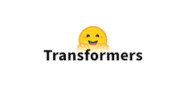
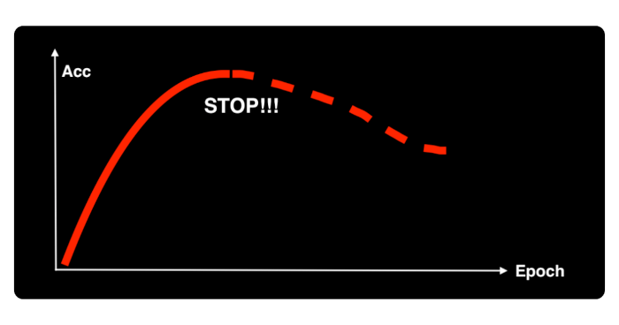
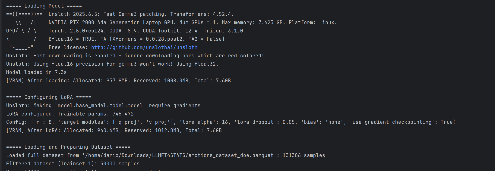
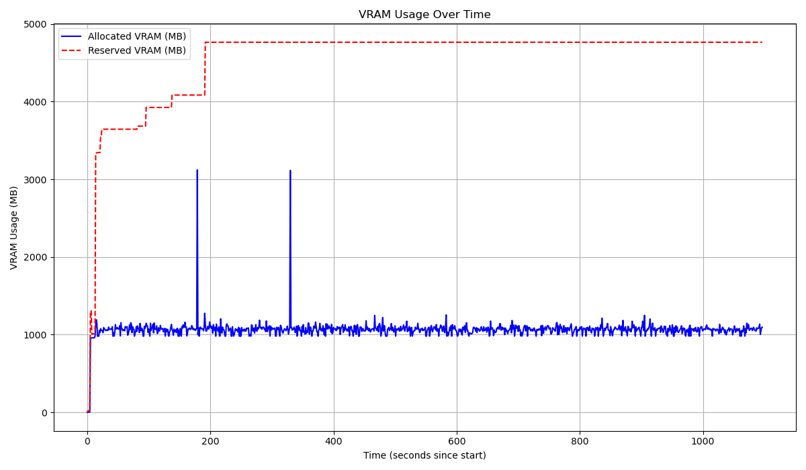
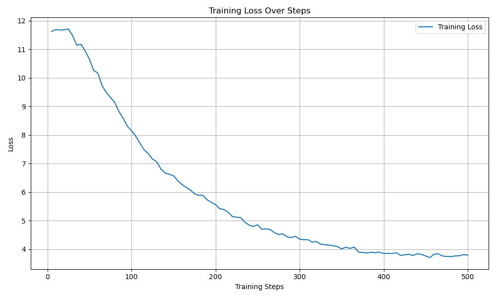

DoE
Quando si parla di Design of Experiment (DoE), di solito pensiamo a un metodo statistico per pianificare esperimenti. L'idea è semplice: vogliamo capire come diverse variabili (o fattori) influenzano un certo risultato (o risposta), cercando di ottenere il massimo delle informazioni con il minor numero di prove e garantendo che i nostri risultati siano validi ed efficienti.
Tuttavia, nel contesto di questo tutorial, il DoE assume una sfumatura un po' diversa. Non stiamo progettando un esperimento per testare direttamente l'impatto di alcune variabili su un modello. Invece, stiamo applicando i principi del DoE per definire con cura il dataset (il "trainset") che useremo. Questo trainset sarà fondamentale per due scopi:
-
Addestrare i modelli di AI tradizionale.
-
Predisporre il fine-tuning di un Large Language Model (LLM).
Il nostro obiettivo qui è chiaro: selezionare un sottoinsieme di osservazioni che sia il più rappresentativo, bilanciato e informato possibile, massimizzando l'efficacia del fine-tuning.
Perché la scelta del Trainset è cruciale?
Il codice seleziona un trainset relativamente piccolo, appena 50.000 frasi. Questa non è una scelta casuale! Vogliamo esplorare un aspetto fondamentale della recente letteratura sugli LLM, che suggerisce come il fine-tuning di un modello pre-addestrato possa essere incredibilmente efficace anche con un numero limitato di casi. Vogliamo verificare questa ipotesi, testando la capacità di generalizzazione di un LLM anche con un trainset più contenuto.
Ma c'è di più. La scelta di un dataset bilanciato è di importanza critica. Immaginate di voler insegnare a un bambino il mondo animale. Se gli mostraste solo gatti, il bambino imparerebbe a riconoscere i gatti benissimo, ma avrebbe difficoltà con i cani o gli uccelli. Allo stesso modo, un dataset sbilanciato, dove alcune categorie (per esempio, certe emozioni o topic) sono sovra-rappresentate, porterebbe l'LLM a:
-
Sovra-apprendere le categorie più frequenti, diventando un "esperto" solo su quelle.
-
Sotto-stimare o addirittura ignorare le categorie meno comuni, ma magari altrettanto importanti per il nostro scopo.
Un trainset bilanciato assicura che il modello sia esposto a tutte le sfumature e varietà presenti nei dati, rendendolo più robusto e capace di generalizzare bene anche su osservazioni che non rientrano nelle categorie più comuni.
Vogliamo che il trainset rappresenti al meglio la ricchezza e la varietà del dataset completo, specialmente quando si tratta di emozioni (Label) e di varietà degli Embeddings (Umap10KMeans). Qui entra in gioco la logica di stratificazione.
Immaginate il vostro dataset come un grande cesto di frutta mista. Ci sono mele rosse, mele verdi, banane e magari qualche frutto esotico raro. Se prendessimo a caso 50 frutti, potremmo ritrovarci con tantissime mele rosse e nessuna banana o frutto esotico. Questo è ciò che succede con un campionamento puramente casuale: le categorie più abbondanti tendono a dominare, mentre quelle meno comuni vengono trascurate.
La nostra logica di stratificazione evita proprio questo squilibrio. Dividiamo il nostro "cesto di frutta" in tanti piccoli "scomparti", dove ogni scomparto è una combinazione unica di Label e di Embeddings (Umap10KMeans). Ognuno di questi scomparti costituisce un nostro strato di campionamento.
Perchè Gemma3
blabla blabla
Fine-tuning a small LLM
Il codice implementa un processo di fine-tuning di un LLM, nello specifico Gemma 3 1b it, specializzandosi nella classificazione delle emozioni. Le soluzioni principali utilizzate per rendere questo processo efficiente, soprattutto in termini di utilizzo della memoria (VRAM) e velocità, sono le seguenti:
- Unsloth (e tecniche di Efficient Fine-tuning come QLoRA e LoRA): Unsloth è una libreria che ottimizza il processo di fine-tuning degli LLM, rendendolo significativamente più veloce e meno esigente in termini di memoria rispetto alle implementazioni standard. Lo fa attraverso varie ottimizzazioni a basso livello. Come funziona nel codice:
- from unsloth import FastLanguageModel: Importa la classe FastLanguageModel che è la versione ottimizzata di Unsloth per caricare e gestire i modelli.
- load_in_4bit=True: Questo parametro attiva la tecnica QLoRA (Quantized Low-Rank Adaptation). Invece di caricare l'intero modello in precisione floating point completa (es. FP16 o FP32), che richiederebbe molta VRAM, QLoRA lo quantizza a 4 bit. Questo riduce drasticamente l'impronta di memoria del modello base.
- model = FastLanguageModel.get_peft_model(model, **LORA_CONFIG): Questo applica la tecnica LoRA (Low-Rank Adaptation). Invece di addestrare tutti i milioni o miliardi di parametri del modello, LoRA "congela" il modello base quantizzato e aggiunge solo un piccolo numero di "adattatori" (matrici a basso rango) che vengono addestrati. Questi adattatori sono molto più piccoli del modello completo, riducendo enormemente il numero di parametri addestrabili e quindi la VRAM e il tempo di calcolo necessari. La configurazione (LORA_CONFIG) definisce i parametri di LoRA, come r (rango delle matrici) e target_modules (quali parti del modello modificare).
- optim="paged_adamw_8bit": Questo specifica un ottimizzatore "paged" che gestisce meglio la memoria. Parti dello stato dell'ottimizzatore possono essere spostate dalla VRAM alla RAM di sistema quando non sono immediatamente necessarie, liberando così preziosa VRAM per le operazioni di calcolo.
- use_gradient_checkpointing=True: Questa tecnica sacrifica leggermente la velocità di addestramento per un notevole risparmio di VRAM. Durante il forward pass (calcolo delle predizioni), non tutte le attivazioni intermedie vengono memorizzate. Durante il backward pass (calcolo dei gradienti), le attivazioni necessarie vengono ricalcolate al volo, riducendo la memoria occupata.

- Hugging Face Transformers e TRL (Transformer Reinforcement Learning): Librerie fondamentali nell'ecosistema di Hugging Face per lavorare con LLM. Transformers fornisce la struttura per caricare modelli, tokenizer e definire gli argomenti di addestramento (TrainingArguments). TRL è una libreria costruita su Transformers che fornisce strumenti specifici per il fine-tuning di LLM, in particolare per compiti come il Supervised Fine-tuning (SFT) e il Reinforcement Learning from Human Feedback (RLHF). Come funziona nel codice:
- TrainingArguments: Definisce tutti i parametri dell'addestramento, come la dimensione del batch (per_device_train_batch_size), i passi di accumulo del gradiente (gradient_accumulation_steps), il learning rate, il numero massimo di passi, e il salvataggio dei log.
- SFTTrainer: È la classe del trainer fornita da TRL specificamente progettata per il Supervised Fine-tuning. Gestisce il ciclo di addestramento, l'applicazione del tokenizer, l'invio dei dati al modello e il calcolo dei gradienti. Semplifica notevolmente il codice necessario per l'addestramento.
- tokenizer: Il tokenizer è essenziale per convertire il testo (le frasi e le etichette delle emozioni) in un formato numerico che il modello può comprendere e viceversa. Il codice lo carica insieme al modello.
- dataset_text_field="text": Indica al SFTTrainer quale campo del dataset formattato contiene il testo da utilizzare per l'addestramento.
- Hugging Face Datasets: È una libreria efficiente per caricare, elaborare e gestire grandi dataset in modo performante, anche quando non stanno completamente in RAM. Come funziona nel codice:
- load_dataset("parquet", data_files={"train": DATASET_PATH}): Carica il dataset da un file Parquet, che è un formato di file colonnare efficiente per i dati tabellari.
- .filter(lambda x: x["Trainset"] == 1): Permette di selezionare solo i campioni desiderati dal dataset in modo efficiente.
- .train_test_split(test_size=0.1, seed=42): Suddivide il dataset in set di addestramento e validazione, essenziale per valutare le prestazioni del modello su dati non visti.
- .map(formatting_func, batched=True): Applica una funzione di formattazione a tutti i campioni del dataset in modo "batchizzato" (elaborando più campioni alla volta), ottimizzando la velocità di pre-elaborazione.

- Monitoraggio VRAM Multi-thread: Permette di tenere traccia dell'utilizzo della memoria della GPU (VRAM) in tempo reale durante l'esecuzione dello script, inclusi i momenti di caricamento del modello e di addestramento. Questo è cruciale per diagnosticare problemi di "Out Of Memory" (OOM) o per capire come le ottimizzazioni influenzano il consumo di memoria. Come funziona nel codice:
- threading.Thread: Viene creato un thread separato (vram_monitor_thread) che si occupa esclusivamente di campionare periodicamente l'utilizzo della VRAM (get_vram_usage()) e di salvare i dati in una coda (queue).
- torch.cuda.memory_allocated() e torch.cuda.memory_reserved(): Funzioni di PyTorch che restituiscono rispettivamente la memoria effettivamente allocata dal codice e la memoria totale riservata da PyTorch sulla GPU.
- La visualizzazione finale con matplotlib.pyplot crea un grafico dell'andamento della VRAM nel tempo.

- Callback Personalizzato per Early Stopping: L'addestramento di modelli di deeplearning può essere costoso. L'Early Stopping è una tecnica per fermare l'addestramento quando il modello smette di migliorare (o inizia a peggiorare) su una metrica specifica (in questo caso, la training loss). Questo previene l'overfitting e risparmia risorse computazionali. Come funziona nel codice:
- CustomEarlyStoppingCallback(TrainerCallback): Viene definita una classe che eredita da TrainerCallback di Hugging Face. Questo permette di "agganciarsi" a specifici eventi durante il ciclo di addestramento.
- on_step_end: Questo metodo viene chiamato alla fine di ogni passo di addestramento. Il callback monitora la "loss" (perdita) dell'addestramento. Se la loss non diminuisce per un numero prestabilito di passi consecutivi (patience), il callback imposta un flag (control.should_training_stop = True) che segnala al Trainer di interrompere l'addestramento.

L'intero processo di fine-tuning, a partire dalle 50K frasi e le rispettive emozioni che costituiscono il trainset, impiega poco più di 1000 secondi, ~15 minuti.
VRAM

Training
